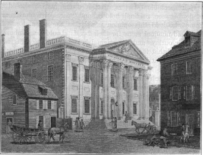
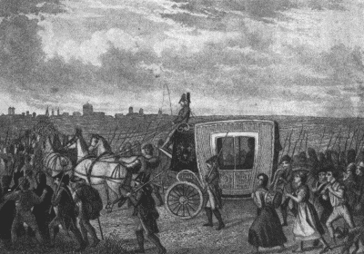

The Men and Measures of the New Government
Friends of the Constitution in Power. —In the first Congress that assembled after the adoption of the Constitution, there were eleven Senators, led by Robert Morris, the financier, who had been delegates to the national convention. Several members of the House of Representatives, headed by James Madison, had also been at Philadelphia in 1787. In making his appointments, Washington strengthened the new system of government still further by a judicious selection of officials. He chose as Secretary of the Treasury, Alexander Hamilton, who had been the most zealous for its success; General Knox, head of the War Department, and Edmund Randolph, the Attorney-General, were likewise conspicuous friends of the experiment. Every member of the federal judiciary whom Washington appointed, from the Chief Justice, John Jay, down to the justices of the district courts, had favored the ratification of the Constitution; and a majority of them had served as members of the national convention that framed the document or of the state ratifying conventions. Only one man of influence in the new government, Thomas Jefferson, the
Secretary of State, was reckoned as a doubter in the house of the faithful. He had expressed opinions both for and against the Constitution; but he had been out of the country acting as the minister at Paris when the Constitution was drafted and ratified.
An Opposition to Conciliate. —The inauguration of Washington amid the plaudits of his countrymen did not set at rest all the political turmoil which had been aroused by the angry contest over ratification. "The interesting nature of the question," wrote John Marshall, "the equality of the parties, the animation produced inevitably by ardent debate had a necessary tendency to embitter the dispositions of the vanquished and to fix more deeply in many bosoms their prejudices against a plan of government in opposition to which all their passions were enlisted." The leaders gathered around Washington were well aware of the excited state of the country. They saw Rhode Island and North Carolina still outside of the union. [1] They knew by what small margins the Constitution had been approved in the great states of Massachusetts, Virginia, and New York. They were equally aware that a majority of the state conventions, in yielding reluctant approval to the Constitution, had drawn a number of amendments for immediate submission to the states.
The First Amendments—a Bill of Rights. —To meet the opposition, Madison proposed, and the first Congress adopted, a series of amendments to the Constitution. Ten of them were soon ratified and became in 1791 a part of the law of the land. These amendments provided, among other things, that Congress could make no law respecting the establishment of religion, abridging the freedom of speech or of the press or the right of the people peaceably to assemble and petition the government for a redress of grievances. They also guaranteed indictment by grand jury and trial by jury for all persons charged by federal officers with serious crimes. To reassure those who still feared that local rights might be invaded by the federal government, the tenth amendment expressly provided that the powers not delegated to the United States by the Constitution, nor prohibited by it to the states, are reserved to the states respectively or to the people. Seven years later, the eleventh amendment was written in the same spirit as the first ten, after a heated debate over the action of the Supreme Court in permitting a citizen to bring a suit against
"the sovereign state" of Georgia. The new amendment was designed to protect states against the federal judiciary by forbidding it to hear any case in which a state was sued by a citizen.
Funding the National Debt. —Paper declarations of rights, however, paid no bills. To this task Hamilton turned all his splendid genius. At the very outset he addressed himself to the problem of the huge public debt, daily mounting as the unpaid interest accumulated. In a Report on Public Credit under date of January 9, 1790, one of the first and greatest of American state papers, he laid before Congress the outlines of his plan. He proposed that the federal government should call in all the old bonds, certificates of indebtedness, and other promises to pay which had been issued by the Congress since the beginning of the Revolution. These national obligations, he urged, should be put into one consolidated debt resting on the credit of the United States; to the holders of the old paper should be issued new bonds drawing interest at fixed rates. This process was called "funding the debt." Such a provision for the support of public credit, Hamilton insisted, would satisfy creditors, restore landed property to its former value, and furnish new resources to agriculture and commerce in the form of credit and capital.
Assumption and Funding of State Debts. —Hamilton then turned to the obligations incurred by the several states in support of the Revolution. These debts he proposed to add to the national debt. They were to be "assumed" by the United States government and placed on the same secure foundation as the continental debt. This measure he defended not merely on grounds of national honor. It would, as he foresaw, give strength to the new national government by making all public creditors, men of substance in their several communities, look to the federal, rather than the state government, for the satisfaction of their claims.
Funding at Face Value. —On the question of the terms of consolidation, assumption, and funding, Hamilton had a firm conviction. That millions of dollars' worth of the continental and state bonds had

passed out of the hands of those who had originally subscribed their funds to the support of the government or had sold supplies for the Revolutionary army was well known. It was also a matter of common knowledge that a very large part of these bonds had been bought by speculators at ruinous figures—ten, twenty, and thirty cents on the dollar. Accordingly, it had been suggested, even in very respectable quarters, that a discrimination should be made between original holders and speculative purchasers. Some who held this opinion urged that the speculators who had paid nominal sums for their bonds should be reimbursed for their outlays and the original holders paid the difference; others said that the government should "scale the debt" by redeeming, not at full value but at a figure reasonably above the market price. Against the proposition Hamilton set his face like flint. He maintained that the government was honestly bound to redeem every bond at its face value, although the difficulty of securing revenue made necessary a lower rate of interest on a part of the bonds and the deferring of interest on another part.
Funding and Assumption Carried. —There was little difficulty in securing the approval of both houses of Congress for the funding of the national debt at full value. The bill for the assumption of state debts, however, brought the sharpest division of opinions. To the Southern members of Congress assumption was a gross violation of states' rights, without any warrant in the Constitution and devised in the interest of Northern speculators who, anticipating assumption and funding, had bought up at low prices the Southern bonds and other promises to pay. New England, on the other hand, was strongly in favor of assumption; several representatives from that section were rash enough to threaten a dissolution of the union if the bill was defeated. To this dispute was added an equally bitter quarrel over the location of the national capital, then temporarily at New York City.
From an old print
First United States Bank at Philadelphia
A deadlock, accompanied by the most surly feelings on both sides, threatened the very existence of the young government. Washington and Hamilton were thoroughly alarmed. Hearing of the extremity to which the contest had been carried and acting on the appeal from the Secretary of the Treasury, Jefferson intervened at this point. By skillful management at a good dinner he brought the opposing leaders together; and thus once more, as on many other occasions, peace was purchased and the union saved by compromise. The bargain this time consisted of an exchange of votes for assumption in return for votes for the capital. Enough Southern members voted for assumption to pass the bill, and a majority was mustered in favor of building the capital on the banks of the Potomac, after locating it for a ten-year period at
Philadelphia to satisfy Pennsylvania members.
The United States Bank. —Encouraged by the success of his funding and assumption measures, Hamilton laid before Congress a project for a great United States Bank. He proposed that a private corporation be chartered by Congress, authorized to raise a capital stock of $10,000,000 (three-fourths in new six per cent federal bonds and one-fourth in specie) and empowered to issue paper currency under proper safeguards.
Many advantages, Hamilton contended, would accrue to the government from this institution. The price of the government bonds would be increased, thus enhancing public credit. A national currency would be created of uniform value from one end of the land to the other. The branches of the bank in various cities would make easy the exchange of funds so vital to commercial transactions on a national scale. Finally, through the issue of bank notes, the money capital available for agriculture and industry would be increased, thus stimulating business enterprise. Jefferson hotly attacked the bank on the ground that Congress had no power whatever under the Constitution to charter such a private corporation. Hamilton defended it with great cogency. Washington, after weighing all opinions, decided in favor of the proposal.
In 1791 the bill establishing the first United States Bank for a period of twenty years became a law.
The Protective Tariff. —A third part of Hamilton's program was the protection of American industries.
The first revenue act of 1789, though designed primarily to bring money into the empty treasury, declared in favor of the principle. The following year Washington referred to the subject in his address to Congress.
Thereupon Hamilton was instructed to prepare recommendations for legislative action. The result, after a delay of more than a year, was his Report on Manufactures, another state paper worthy, in closeness of reasoning and keenness of understanding, of a place beside his report on public credit. Hamilton based his argument on the broadest national grounds: the protective tariff would, by encouraging the building of factories, create a home market for the produce of farms and plantations; by making the United States independent of other countries in times of peace, it would double its security in time of war; by making use of the labor of women and children, it would turn to the production of goods persons otherwise idle or only partly employed; by increasing the trade between the North and South it would strengthen the links of union and add to political ties those of commerce and intercourse. The revenue measure of 1792 bore the impress of these arguments.
The Rise of Political Parties
Dissensions over Hamilton's Measures. —Hamilton's plans, touching deeply as they did the resources of individuals and the interests of the states, awakened alarm and opposition. Funding at face value, said his critics, was a government favor to speculators; the assumption of state debts was a deep design to undermine the state governments; Congress had no constitutional power to create a bank; the law creating the bank merely allowed a private corporation to make paper money and lend it at a high rate of interest; and the tariff was a tax on land and labor for the benefit of manufacturers.
Hamilton's reply to this bill of indictment was simple and straightforward. Some rascally speculators had profited from the funding of the debt at face value, but that was only an incident in the restoration of public credit. In view of the jealousies of the states it was a good thing to reduce their powers and pretensions. The Constitution was not to be interpreted narrowly but in the full light of national needs. The bank would enlarge the amount of capital so sorely needed to start up American industries, giving markets to farmers and planters. The tariff by creating a home market and increasing opportunities for employment would benefit both land and labor. Out of such wise policies firmly pursued by the government, he concluded, were bound to come strength and prosperity for the new government at home, credit and power abroad. This view Washington fully indorsed, adding the weight of his great name to the inherent merits of the measures adopted under his administration.
The Sharpness of the Partisan Conflict. —As a result of the clash of opinion, the people of the country
gradually divided into two parties: Federalists and Anti-Federalists, the former led by Hamilton, the latter by Jefferson. The strength of the Federalists lay in the cities—Boston, Providence, Hartford, New York, Philadelphia, Charleston—among the manufacturing, financial, and commercial groups of the population who were eager to extend their business operations. The strength of the Anti-Federalists lay mainly among the debt-burdened farmers who feared the growth of what they called "a money power" and planters in all sections who feared the dominance of commercial and manufacturing interests. The farming and planting South, outside of the few towns, finally presented an almost solid front against assumption, the bank, and the tariff. The conflict between the parties grew steadily in bitterness, despite the conciliatory and engaging manner in which Hamilton presented his cause in his state papers and despite the constant efforts of Washington to soften the asperity of the contestants.
The Leadership and Doctrines of Jefferson. —The party dispute had not gone far before the opponents of the administration began to look to Jefferson as their leader. Some of Hamilton's measures he had approved, declaring afterward that he did not at the time understand their significance. Others, particularly the bank, he fiercely assailed. More than once, he and Hamilton, shaking violently with anger, attacked each other at cabinet meetings, and nothing short of the grave and dignified pleas of Washington prevented an early and open break between them. In 1794 it finally came. Jefferson resigned as Secretary of State and retired to his home in Virginia to assume, through correspondence and negotiation, the leadership of the steadily growing party of opposition.
Shy and modest in manner, halting in speech, disliking the turmoil of public debate, and deeply interested in science and philosophy, Jefferson was not very well fitted for the strenuous life of political contest.
Nevertheless, he was an ambitious and shrewd negotiator. He was also by honest opinion and matured conviction the exact opposite of Hamilton. The latter believed in a strong, active, "high-toned"
government, vigorously compelling in all its branches. Jefferson looked upon such government as dangerous to the liberties of citizens and openly avowed his faith in the desirability of occasional popular uprisings. Hamilton distrusted the people. "Your people is a great beast," he is reported to have said.
Jefferson professed his faith in the people with an abandon that was considered reckless in his time.
On economic matters, the opinions of the two leaders were also hopelessly at variance. Hamilton, while cherishing agriculture, desired to see America a great commercial and industrial nation. Jefferson was equally set against this course for his country. He feared the accumulation of riches and the growth of a large urban working class. The mobs of great cities, he said, are sores on the body politic; artisans are usually the dangerous element that make revolutions; workshops should be kept in Europe and with them the artisans with their insidious morals and manners. The only substantial foundation for a republic, Jefferson believed to be agriculture. The spirit of independence could be kept alive only by free farmers, owning the land they tilled and looking to the sun in heaven and the labor of their hands for their sustenance. Trusting as he did in the innate goodness of human nature when nourished on a free soil, Jefferson advocated those measures calculated to favor agriculture and to enlarge the rights of persons rather than the powers of government. Thus he became the champion of the individual against the interference of the government, and an ardent advocate of freedom of the press, freedom of speech, and freedom of scientific inquiry. It was, accordingly, no mere factious spirit that drove him into opposition to Hamilton.
The Whisky Rebellion. —The political agitation of the Anti-Federalists was accompanied by an armed revolt against the government in 1794. The occasion for this uprising was another of Hamilton's measures, a law laying an excise tax on distilled spirits, for the purpose of increasing the revenue needed to pay the interest on the funded debt. It so happened that a very considerable part of the whisky manufactured in the country was made by the farmers, especially on the frontier, in their own stills. The new revenue law meant that federal officers would now come into the homes of the people, measure their liquor, and take the tax out of their pockets. All the bitterness which farmers felt against the fiscal measures of the government was redoubled. In the western districts of Pennsylvania, Virginia, and North Carolina, they

refused to pay the tax. In Pennsylvania, some of them sacked and burned the houses of the tax collectors, as the Revolutionists thirty years before had mobbed the agents of King George sent over to sell stamps.
They were in a fair way to nullify the law in whole districts when Washington called out the troops to suppress "the Whisky Rebellion." Then the movement collapsed; but it left behind a deep-seated resentment which flared up in the election of several obdurate Anti-Federalist Congressmen from the disaffected regions.
Foreign Influences and Domestic Politics
The French Revolution. —In this exciting period, when all America was distracted by partisan disputes, a storm broke in Europe—the epoch-making French Revolution—which not only shook the thrones of the Old World but stirred to its depths the young republic of the New World. The first scene in this dramatic affair occurred in the spring of 1789, a few days after Washington was inaugurated. The king of France, Louis XVI, driven into bankruptcy by extravagance and costly wars, was forced to resort to his people for financial help. Accordingly he called, for the first time in more than one hundred fifty years, a meeting of the national parliament, the "Estates General," composed of representatives of the "three estates"—the clergy, nobility, and commoners. Acting under powerful leaders, the commoners, or "third estate," swept aside the clergy and nobility and resolved themselves into a national assembly. This stirred the country to its depths.
From an old print
Louis XVI in the Hands of the Mob
Great events followed in swift succession. On July 14, 1789, the Bastille, an old royal prison, symbol of the king's absolutism, was stormed by a Paris crowd and destroyed. On the night of August 4, the feudal privileges of the nobility were abolished by the national assembly amid great excitement. A few days later came the famous Declaration of the Rights of Man, proclaiming the sovereignty of the people and the privileges of citizens. In the autumn of 1791, Louis XVI was forced to accept a new constitution for France vesting the legislative power in a popular assembly. Little disorder accompanied these startling changes. To all appearances a peaceful revolution had stripped the French king of his royal prerogatives and based the government of his country on the consent of the governed.
American Influence in France. —In undertaking their great political revolt the French had been encouraged by the outcome of the American Revolution. Officers and soldiers, who had served in the
American war, reported to their French countrymen marvelous tales. At the frugal table of General Washington, in council with the unpretentious Franklin, or at conferences over the strategy of war, French noblemen of ancient lineage learned to respect both the talents and the simple character of the leaders in the great republican commonwealth beyond the seas. Travelers, who had gone to see the experiment in republicanism with their own eyes, carried home to the king and ruling class stories of an astounding system of popular government.
On the other hand the dalliance with American democracy was regarded by French conservatives as playing with fire. "When we think of the false ideas of government and philanthropy," wrote one of Lafayette's aides, "which these youths acquired in America and propagated in France with so much enthusiasm and such deplorable success—for this mania of imitation powerfully aided the Revolution, though it was not the sole cause of it—we are bound to confess that it would have been better, both for themselves and for us, if these young philosophers in red-heeled shoes had stayed at home in attendance on the court."
Early American Opinion of the French Revolution. —So close were the ties between the two nations that it is not surprising to find every step in the first stages of the French Revolution greeted with applause in the United States. "Liberty will have another feather in her cap," exultantly wrote a Boston editor. "In no part of the globe," soberly wrote John Marshall, "was this revolution hailed with more joy than in America.... But one sentiment existed." The main key to the Bastille, sent to Washington as a memento, was accepted as "a token of the victory gained by liberty." Thomas Paine saw in the great event "the first ripe fruits of American principles transplanted into Europe." Federalists and Anti-Federalists regarded the new constitution of France as another vindication of American ideals.
The Reign of Terror. —While profuse congratulations were being exchanged, rumors began to come that all was not well in France. Many noblemen, enraged at the loss of their special privileges, fled into Germany and plotted an invasion of France to overthrow the new system of government. Louis XVI entered into negotiations with his brother monarchs on the continent to secure their help in the same enterprise, and he finally betrayed to the French people his true sentiments by attempting to escape from his kingdom, only to be captured and taken back to Paris in disgrace.
A new phase of the revolution now opened. The working people, excluded from all share in the government by the first French constitution, became restless, especially in Paris. Assembling on the Champs de Mars, a great open field, they signed a petition calling for another constitution giving them the suffrage. When told to disperse, they refused and were fired upon by the national guard. This "massacre,"
as it was called, enraged the populace. A radical party, known as "Jacobins," then sprang up, taking its name from a Jacobin monastery in which it held its sessions. In a little while it became the master of the popular convention convoked in September, 1792. The monarchy was immediately abolished and a republic established. On January 21, 1793, Louis was sent to the scaffold. To the war on Austria, already raging, was added a war on England. Then came the Reign of Terror, during which radicals in possession of the convention executed in large numbers counter-revolutionists and those suspected of sympathy with the monarchy. They shot down peasants who rose in insurrection against their rule and established a relentless dictatorship. Civil war followed. Terrible atrocities were committed on both sides in the name of liberty, and in the name of monarchy. To Americans of conservative temper it now seemed that the Revolution, so auspiciously begun, had degenerated into anarchy and mere bloodthirsty strife.
Burke Summons the World to War on France. —In England, Edmund Burke led the fight against the new French principles which he feared might spread to all Europe. In his Reflections on the French Revolution, written in 1790, he attacked with terrible wrath the whole program of popular government; he called for war, relentless war, upon the French as monsters and outlaws; he demanded that they be reduced to order by the restoration of the king to full power under the protection of the arms of European nations.
Paine's Defense of the French Revolution. —To counteract the campaign of hate against the French, Thomas Paine replied to Burke in another of his famous tracts, The Rights of Man, which was given to the American public in an edition containing a letter of approval from Jefferson. Burke, said Paine, had been mourning about the glories of the French monarchy and aristocracy but had forgotten the starving peasants and the oppressed people; had wept over the plumage and neglected the dying bird. Burke had denied the right of the French people to choose their own governors, blandly forgetting that the English government in which he saw final perfection itself rested on two revolutions. He had boasted that the king of England held his crown in contempt of the democratic societies. Paine answered: "If I ask a man in America if he wants a king, he retorts and asks me if I take him for an idiot." To the charge that the doctrines of the rights of man were "new fangled," Paine replied that the question was not whether they were new or old but whether they were right or wrong. As to the French disorders and difficulties, he bade the world wait to see what would be brought forth in due time.
The Effect of the French Revolution on American Politics. —The course of the French Revolution and the controversies accompanying it, exercised a profound influence on the formation of the first political parties in America. The followers of Hamilton, now proud of the name "Federalists," drew back in fright as they heard of the cruel deeds committed during the Reign of Terror. They turned savagely upon the revolutionists and their friends in America, denouncing as "Jacobin" everybody who did not condemn loudly enough the proceedings of the French Republic. A Massachusetts preacher roundly assailed "the atheistical, anarchical, and in other respects immoral principles of the French Republicans"; he then proceeded with equal passion to attack Jefferson and the Anti-Federalists, whom he charged with spreading false French propaganda and betraying America. "The editors, patrons, and abettors of these vehicles of slander," he exclaimed, "ought to be considered and treated as enemies to their country.... Of all traitors they are the most aggravatedly criminal; of all villains, they are the most infamous and detestable."
The Anti-Federalists, as a matter of fact, were generally favorable to the Revolution although they deplored many of the events associated with it. Paine's pamphlet, indorsed by Jefferson, was widely read.
Democratic societies, after the fashion of French political clubs, arose in the cities; the coalition of European monarchs against France was denounced as a coalition against the very principles of republicanism; and the execution of Louis XVI was openly celebrated at a banquet in Philadelphia.
Harmless titles, such as "Sir," "the Honorable," and "His Excellency," were decried as aristocratic and some of the more excited insisted on adopting the French title, "Citizen," speaking, for example, of
"Citizen Judge" and "Citizen Toastmaster." Pamphlets in defense of the French streamed from the press, while subsidized newspapers kept the propaganda in full swing.
The European War Disturbs American Commerce. —This battle of wits, or rather contest in calumny, might have gone on indefinitely in America without producing any serious results, had it not been for the war between England and France, then raging. The English, having command of the seas, claimed the right to seize American produce bound for French ports and to confiscate American ships engaged in carrying French goods. Adding fuel to a fire already hot enough, they began to search American ships and to carry off British-born sailors found on board American vessels.
The French Appeal for Help. —At the same time the French Republic turned to the United States for aid in its war on England and sent over as its diplomatic representative "Citizen" Genêt, an ardent supporter of the new order. On his arrival at Charleston, he was greeted with fervor by the Anti-Federalists. As he made his way North, he was wined and dined and given popular ovations that turned his head. He thought the whole country was ready to join the French Republic in its contest with England. Genêt therefore attempted to use the American ports as the base of operations for French privateers preying on British merchant ships; and he insisted that the United States was in honor bound to help France under the treaty of 1778.
The Proclamation of Neutrality and the Jay Treaty. —Unmoved by the rising tide of popular sympathy for France, Washington took a firm course. He received Genêt coldly. The demand that the United States aid France under the old treaty of alliance he answered by proclaiming the neutrality of America and warning American citizens against hostile acts toward either France or England. When Genêt continued to hold meetings, issue manifestoes, and stir up the people against England, Washington asked the French government to recall him. This act he followed up by sending the Chief Justice, John Jay, on a pacific mission to England.
The result was the celebrated Jay treaty of 1794. By its terms Great Britain agreed to withdraw her troops from the western forts where they had been since the war for independence and to grant certain slight trade concessions. The chief sources of bitterness—the failure of the British to return slaves carried off during the Revolution, the seizure of American ships, and the impressment of sailors—were not touched, much to the distress of everybody in America, including loyal Federalists. Nevertheless, Washington, dreading an armed conflict with England, urged the Senate to ratify the treaty. The weight of his influence carried the day.
At this, the hostility of the Anti-Federalists knew no bounds. Jefferson declared the Jay treaty "an infamous act which is really nothing more than an alliance between England and the Anglo-men of this country, against the legislature and the people of the United States." Hamilton, defending it with his usual courage, was stoned by a mob in New York and driven from the platform with blood streaming from his face. Jay was burned in effigy. Even Washington was not spared. The House of Representatives was openly hostile. To display its feelings, it called upon the President for the papers relative to the treaty negotiations, only to be more highly incensed by his flat refusal to present them, on the ground that the House did not share in the treaty-making power.
Washington Retires from Politics. —Such angry contests confirmed the President in his slowly maturing determination to retire at the end of his second term in office. He did not believe that a third term was unconstitutional or improper; but, worn out by his long and arduous labors in war and in peace and wounded by harsh attacks from former friends, he longed for the quiet of his beautiful estate at Mount Vernon.
In September, 1796, on the eve of the presidential election, Washington issued his Farewell Address, another state paper to be treasured and read by generations of Americans to come. In this address he directed the attention of the people to three subjects of lasting interest. He warned them against sectional jealousies. He remonstrated against the spirit of partisanship, saying that in government "of the popular character, in government purely elective, it is a spirit not to be encouraged." He likewise cautioned the people against "the insidious wiles of foreign influence," saying: "Europe has a set of primary interests which to us have none or a very remote relation. Hence she must be engaged in frequent controversies, the causes of which are essentially foreign to our concerns. Hence, therefore, it would be unwise in us to implicate ourselves, by artificial ties, in the ordinary vicissitudes of her politics or the ordinary combinations and collisions of her friendships or enmities.... Why forego the advantages of so peculiar a situation?... It is our true policy to steer clear of permanent alliances with any portion of the foreign world.... Taking care always to keep ourselves, by suitable establishments, on a respectable defensive posture, we may safely trust to temporary alliances for extraordinary emergencies."
The Campaign of 1796—Adams Elected. —On hearing of the retirement of Washington, the Anti-Federalists cast off all restraints. In honor of France and in opposition to what they were pleased to call the monarchical tendencies of the Federalists, they boldly assumed the name "Republican"; the term
"Democrat," then applied only to obscure and despised radicals, had not come into general use. They selected Jefferson as their candidate for President against John Adams, the Federalist nominee, and carried on such a spirited campaign that they came within four votes of electing him.
The successful candidate, Adams, was not fitted by training or opinion for conciliating a determined opposition. He was a reserved and studious man. He was neither a good speaker nor a skillful negotiator.
In one of his books he had declared himself in favor of "government by an aristocracy of talents and wealth"—an offense which the Republicans never forgave. While John Marshall found him "a sensible, plain, candid, good-tempered man," Jefferson could see in him nothing but a "monocrat" and "Anglo-man." Had it not been for the conduct of the French government, Adams would hardly have enjoyed a moment's genuine popularity during his administration.
The Quarrel with France. —The French Directory, the executive department established under the constitution of 1795, managed, however, to stir the anger of Republicans and Federalists alike. It regarded the Jay treaty as a rebuke to France and a flagrant violation of obligations solemnly registered in the treaty of 1778. Accordingly it refused to receive the American minister, treated him in a humiliating way, and finally told him to leave the country. Overlooking this affront in his anxiety to maintain peace, Adams dispatched to France a commission of eminent men with instructions to reach an understanding with the French Republic. On their arrival, they were chagrined to find, instead of a decent reception, an indirect demand for an apology respecting the past conduct of the American government, a payment in cash, and an annual tribute as the price of continued friendship. When the news of this affair reached President Adams, he promptly laid it before Congress, referring to the Frenchmen who had made the demands as
"Mr. X, Mr. Y, and Mr. Z."
This insult, coupled with the fact that French privateers, like the British, were preying upon American commerce, enraged even the Republicans who had been loudest in the profession of their French sympathies. They forgot their wrath over the Jay treaty and joined with the Federalists in shouting:
"Millions for defense, not a cent for tribute!" Preparations for war were made on every hand. Washington was once more called from Mount Vernon to take his old position at the head of the army. Indeed, fighting actually began upon the high seas and went on without a formal declaration of war until the year 1800. By that time the Directory had been overthrown. A treaty was readily made with Napoleon, the First Consul, who was beginning his remarkable career as chief of the French Republic, soon to be turned into an empire.
Alien and Sedition Laws. —Flushed with success, the Federalists determined, if possible, to put an end to radical French influence in America and to silence Republican opposition. They therefore passed two drastic laws in the summer of 1798: the Alien and Sedition Acts.
The first of these measures empowered the President to expel from the country or to imprison any alien whom he regarded as "dangerous" or "had reasonable grounds to suspect" of "any treasonable or secret machinations against the government."
The second of the measures, the Sedition Act, penalized not only those who attempted to stir up unlawful combinations against the government but also every one who wrote, uttered, or published "any false, scandalous, and malicious writing ... against the government of the United States or either House of Congress, or the President of the United States, with intent to defame said government ... or to bring them or either of them into contempt or disrepute." This measure was hurried through Congress in spite of the opposition and the clear provision in the Constitution that Congress shall make no law abridging the freedom of speech or of the press. Even many Federalists feared the consequences of the action. Hamilton was alarmed when he read the bill, exclaiming: "Let us not establish a tyranny. Energy is a very different thing from violence." John Marshall told his friends in Virginia that, had he been in Congress, he would have opposed the two bills because he thought them "useless" and "calculated to create unnecessary discontents and jealousies."
The Alien law was not enforced; but it gave great offense to the Irish and French whose activities against the American government's policy respecting Great Britain put them in danger of prison. The Sedition law,
on the other hand, was vigorously applied. Several editors of Republican newspapers soon found themselves in jail or broken by ruinous fines for their caustic criticisms of the Federalist President and his policies. Bystanders at political meetings, who uttered sentiments which, though ungenerous and severe, seem harmless enough now, were hurried before Federalist judges and promptly fined and imprisoned.
Although the prosecutions were not numerous, they aroused a keen resentment. The Republicans were convinced that their political opponents, having saddled upon the country Hamilton's fiscal system and the British treaty, were bent on silencing all censure. The measures therefore had exactly the opposite effect from that which their authors intended. Instead of helping the Federalist party, they made criticism of it more bitter than ever.
The Kentucky and Virginia Resolutions. —Jefferson was quick to take advantage of the discontent. He drafted a set of resolutions declaring the Sedition law null and void, as violating the federal Constitution.
His resolutions were passed by the Kentucky legislature late in 1798, signed by the governor, and transmitted to the other states for their consideration. Though receiving unfavorable replies from a number of Northern states, Kentucky the following year reaffirmed its position and declared that the nullification of all unconstitutional acts of Congress was the rightful remedy to be used by the states in the redress of grievances. It thus defied the federal government and announced a doctrine hostile to nationality and fraught with terrible meaning for the future. In the neighboring state of Virginia, Madison led a movement against the Alien and Sedition laws. He induced the legislature to pass resolutions condemning the acts as unconstitutional and calling upon the other states to take proper means to preserve their rights and the rights of the people.
The Republican Triumph in 1800. —Thus the way was prepared for the election of 1800. The Republicans left no stone unturned in their efforts to place on the Federalist candidate, President Adams, all the odium of the Alien and Sedition laws, in addition to responsibility for approving Hamilton's measures and policies. The Federalists, divided in councils and cold in their affection for Adams, made a poor campaign. They tried to discredit their opponents with epithets of "Jacobins" and
"Anarchists"—terms which had been weakened by excessive use. When the vote was counted, it was found that Adams had been defeated; while the Republicans had carried the entire South and New York also and secured eight of the fifteen electoral votes cast by Pennsylvania. "Our beloved Adams will now close his bright career," lamented a Federalist newspaper. "Sons of faction, demagogues and high priests of anarchy, now you have cause to triumph!"
An old cartoon
A Quarrel between a Federalist and a Republican in the House of Representatives Jefferson's election, however, was still uncertain. By a curious provision in the Constitution, presidential electors were required to vote for two persons without indicating which office each was to fill, the one receiving the highest number of votes to be President and the candidate standing next to be Vice President.
It so happened that Aaron Burr, the Republican candidate for Vice President, had received the same number of votes as Jefferson; as neither had a majority the election was thrown into the House of Representatives, where the Federalists held the balance of power. Although it was well known that Burr was not even a candidate for President, his friends and many Federalists began intriguing for his election to that high office. Had it not been for the vigorous action of Hamilton the prize might have been snatched out of Jefferson's hands. Not until the thirty-sixth ballot on February 17, 1801, was the great issue decided
J.S. Bassett, The Federalist System (American Nation Series).
C.A. Beard, Economic Origins of Jeffersonian Democracy.
H. Lodge, Alexander Hamilton.
J.T. Morse, Thomas Jefferson.
Questions
1. Who were the leaders in the first administration under the Constitution?
2. What step was taken to appease the opposition?
3. Enumerate Hamilton's great measures and explain each in detail.
4. Show the connection between the parts of Hamilton's system.
5. Contrast the general political views of Hamilton and Jefferson.
6. What were the important results of the "peaceful" French Revolution (1789-92)?
7. Explain the interaction of opinion between France and the United States.
8. How did the "Reign of Terror" change American opinion?
9. What was the Burke-Paine controversy?
10. Show how the war in Europe affected American commerce and involved America with England and France.
11. What were American policies with regard to each of those countries?
12. What was the outcome of the Alien and Sedition Acts?
Research Topics
Early Federal Legislation. —Coman, Industrial History of the United States, pp. 133-156; Elson, History of the United States, pp. 341-348.
Hamilton's Report on Public Credit. —Macdonald, Documentary Source Book, pp. 233-243.
The French Revolution. —Robinson and Beard, Development of Modern Europe, Vol. I, pp. 224-282; Elson, pp. 351-354.
The Burke-Paine Controversy. —Make an analysis of Burke's Reflections on the French Revolution and Paine's Rights of Man.
The Alien and Sedition Acts. —Macdonald, Documentary Source Book, pp. 259-267; Elson, pp. 367-375.
Kentucky and Virginia Resolutions. —Macdonald, pp. 267-278.
Source Studies. —Materials in Hart, American History Told by Contemporaries, Vol. III, pp. 255-343.
Biographical Studies. —Alexander Hamilton, John Adams, Thomas Jefferson, and Albert Gallatin.
The Twelfth Amendment. —Contrast the provision in the original Constitution with the terms of the Amendment. See Appendix.
{kind=link}